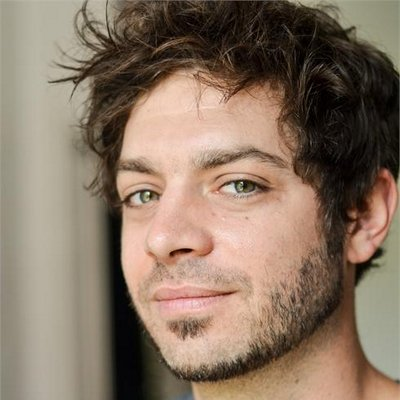

About me

Hi!
My name is Adrien, I'm a French guy who currently lives in Paris, France.
I have loved programming and playing drums since I was 6.
We may have met while I was involved in the following projects: Startup Tour (cf videos), Openwhyd, fhacktory hackathons, or man is not a bird.
What I do as a freelance professional
I develop Node/Meteor/JS web applications and tools. I am also good at evaluating and coaching developers.
I value:
- Efficiency in the development process;
- Transparency in my intents, my communication, and my code;
- Integrity with my interests and convictions.
How I work
- I currently charge 120€ per hour. I work no more than 5 hours per day, 5 days per week.
- I am available for missions during most of the summer.
- I accept flat fee invoicing for very simple projects only (i.e. < €2000). Otherwise, we'll work the Agile way: user stories to decide and prioritize with you, 2-week sprints, per-sprint billing.
Explanation: Why Agile is better for getting your app or website delivered.